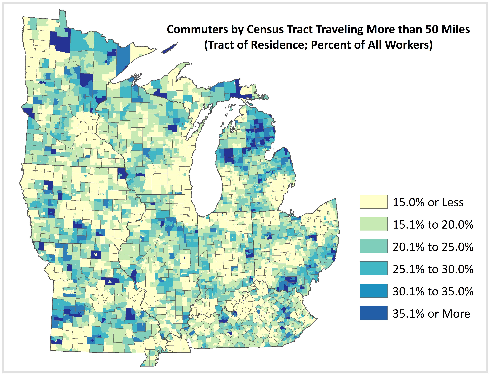

During my time as a Community Development Specialist, I have mapped numerous socio-economic factors associated with demographic change, community assets, spatial mismatches in capital, industry agglomeration and economic upheaval. More recently, I have also developed digital tools for further visualizing a variety of community and economic conditions. The examples below represent a small sample of these efforts.
Selected Samples
Proprietor Nation: The Rise of the Gig Economy
Since 1970, the nation's number of proprietors, or self-employed individuals, has increased by 329 percent. In comparison, the number of people working for wages increased by just 112 percent. However, the average income earned by proprietors is often erratic from year-to-year. Built with Leaflet, this application allows users to see the change in proprietors between 1970 and 2016 within metro areas of 1 million or more residents.
Place and Prosperity: What are the Potential Connections?
Per capita income is a basic measure of prosperity. This application uses D3 (Data Driven Documents) to explore the potential relationships between state per capita income and other state characteristics such as productivity, share of the population with a college degree, and share of employment in manufacturing.
Stretch Commuting Across the Rural-Urban Continuum
{kind=link}
I presented new research on patterns and determinants of "stretch" commuters at the 2018 Southern Regional Science Association Conference in Philadelphia, PA. Stretch commuters are long-distance commuters traveling more than 50 miles each way between their place of residence and place of employment. The analysis involved more than one billion shortest path calculations of origin-destination pairs. You can download our working paper or our slide deck.
Exploring Shaded Relief: Big Sky to Bozeman, Montana

The Big Sky to Bozeman project explores using shaded relief and land cover characteristics to depict a bicycling race across the mountainous west. This 2,100 mile route covers 21 different stages across Montana, Wyoming, Idaho and Washington.
Seasonal and Recreational Homes by County: 2010-2014
Natural amenities offer assets that many regions can use as a foundation for growing their economies and to attract and retain residents. While the USDA has created an index for measuring natural amenity levels, this index overlooks many areas with high levels of natural amenities. This map of seasonal and reacreational homes offers another pespective on natural amenity availability.
Transform Milwaukee Initiative: Foreclosure Cases by Census Tract

Madison Food Deserts: Supply and Demand Distribution

Madison Food Deserts: Hispanic and Latino Residents